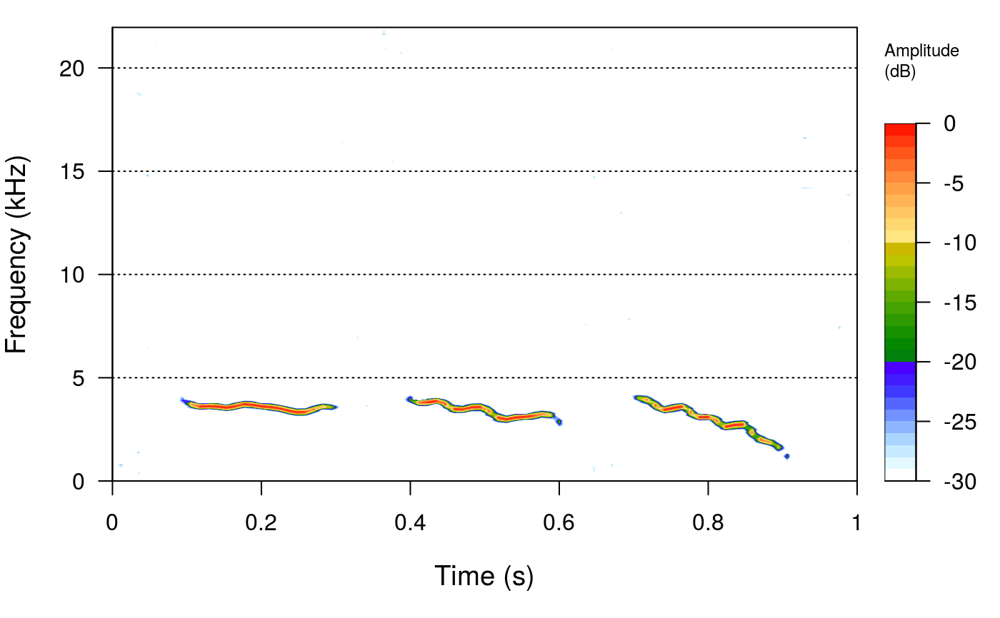

sim_songs simulate animal vocalizations in a wave object under brownian motion frequency drift.
sim_songs(n = 1, durs = 0.2, harms = 3, amps = c(1, 0.5, 0.2), gaps = 0.1, freqs = 5, samp.rate = 44.1, sig2 = 0.5, steps = 10, bgn = 0.5, seed = NULL, diff_fun = "GBM", fin = 0.1, fout = 0.2, shape = "linear", selec_table = FALSE, file_name = NULL, path = NULL)
Arguments
| n | Number of song subunits (e.g. elements). Default is 1. |
|---|---|
| durs | Numeric vector with the duration of subunits in seconds. It should either be a single value (which would
be used for all subunits) or a vector of length |
| harms | NUmeric vector of length 1 specifyin the number of harmonics to simulate. 1 indicates that only the fundamental frequency harmonic will be simulated. |
| amps | Numeric vector with the relative amplitude of each of the harmonics (including the fundamental frequency). |
| gaps | Nueric vector with the duration of gaps (silence between subunits) in seconds. It should either be a single value
(which would be used for all subunits) or a vector of length |
| freqs | Nueric vector with the initial frequency of the subunits (and ending frequency if |
| samp.rate | Numerirc vector of length 1. Sets the sampling frequency of the wave object (in kHz). Default is 44.1. |
| sig2 | Numeric vector of length 1 defining the sigma value of the brownian motion model. Higher values will produce faster
frequency modulations. Ignored if |
| steps | Numeric vector of length 1. Controls the mean number of segments in which each song subunit is split during the brownian motion process. If not all subunits have the same duration, longer units will be split in more steps (although the average duration subunit will have the predefined number of steps). Default is 10. |
| bgn | Numeric vector of length 1 indicating the background noise level. 0 means no additional noise will 1 means noise at the same amplitude than the song subunits. Default is 0.5. |
| seed | Numeric vector of length 1. This allows users to get the same results in different runs (using |
| diff_fun | Character vector of length 1 controlling the function used to simulate the brownian motion process of
frequency drift across time. Only "BB" and "GBM" are accepted at this time.Check the |
| fin | Numeric vector of length 1 setting the proportion of the sub-unit to fade-in amplitude (value between 0 and 1). Default is 0.1. Note that 'fin' + 'fout' cannot be higher than 1. |
| fout | Numeric vector of length 1 setting the proportion of the sub-unit to fade-out amplitude (value between 0 and 1). Default is 0.2. Note that 'fin' + 'fout' cannot be higher than 1. |
| shape | Character string of length 1 controlling the shape of in and out amplitude fading of the song sub-units ('fin' and 'fout'). "linear" (default), "exp" (exponential), and "cos" (cosine) are currently allowed. |
| selec_table | Logical. If |
| file_name | Character string for naming the ".wav" file. Ignored if
'selec_table' is |
| path | Character string containing the directory path where the sound files are located. Ignored if 'selec_table' is |
Value
A wave object containing the simulated songs. If 'selec_table' is TRUE the function saves the wave object as a '.wav' sound file in the working directory (or 'path') and returns a list including 1) a selection table with the start/end time, and bottom/top frequency of the sub-units and 2) the wave object.
Details
This functions uses a brownian motion stochastic process to simulate animal vocalizations (i.e. frequency traces across time). Several song subunits (e.g. elements) can be simulated as well as the corresponding harmonics.
See also
querxc for for downloading bird vocalizations from an online repository.
Examples
{ # simulate a song with 3 elements and no harmonics sm_sng <- sim_songs(n = 3, harms = 1) # plot spectro seewave::spectro(sm_sng) # simulate a song with 5 elements and 2 extra harmonics sm_sng2 <- sim_songs(n = 5, harms = 3) # plot spectro seewave::spectro(sm_sng2) }